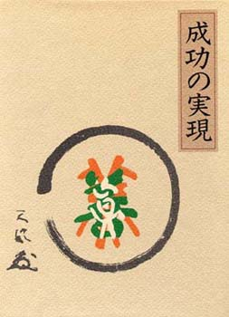

 |
目次 |
|
|
題名 ：成功の実現 述者 ：中村天風 値段 ：１０，１００円（税込み） 発行所：日本経営合理化協会出版局 ISBN 4-930838-58-4 第五章 より強く、逞しく （一部紹介） 途中略 戦争中、お国の仕事で東奔西走している時には、もちろん自惚れも手伝ってはいましたけ れど、ちょいと俺ぐらい心の強い奴はたんといなかろう、なんて思っていた。たまたま、そ う思うような事柄を経験してますもんですからねえ。 きょうも久しぶりで、古い本を出して読んでいると、あの日露戦争時代の松花江の鉄橋破 壊についての参謀本部の報告に私の名前が出ていたんだが、五十何年前の思い出をさらによ り新しく頭のなかに思い浮かべてみたんですがね。これは私ひとりの実感ですが、あの時あ れだけ命知らずの人間が六人も七人もいて、松花江の鉄橋破壊に行って、線路の下に埋没し た火薬の導火線に火をつけることができたのは、自慢じゃないが私一人だった。まあ、あな た方ならすぐつけるでしょうけどもね。 これはいくらお話したって、実際を知らない人にはピンとこないかもしれませんけれども。 満州へ行った人は、ご承知のあの満州鉄道の敷いてある線路の状態を思い浮かべるでしょう。 今みたいな高架方式というのはないんですから、三間四間の高い堤防の上ヘレールが敷いて ある。そして、その鉄道の線路を破壊するために、レールの敷いてある下の枕木と枕木の間 を掘って、そこへ火薬を埋めるんですよ。今みたいな便利な乾電池なんかない時代ですから、 火薬を観世縒りのなかに縒り込んだのを三尺ぐらいの長さにして、それと埋めた火薬とをつ なぎ合わせて、これへ火をつけるんです。 「わけねえじゃねえか、火をつけりやいいんだ」と思う人があるかもしれないけれども、 そりや火をつけりやいいんですよ。けれどね、なかなかそんな簡単明瞭にできない仕事なん です。三十分に一回ずつ線路を警戒する巡邏兵が回っているんですから。だから、三十分ず っの間にその砂利を掘る。そして掘るのも、ものものしい道具じゃ掘れやしない。あなた方 が庭で草や何かをとる時に使う匙の大きいような土を掘るものがあるでしょう、あれで掘る。 ところが鉄道の線路というものは、あの重量のある車を乗せなければならないんですから、 もうコンクリートで固めたように砂利ってものは固いんですよ。そいつを、三十分かかって 掘るだけならまだいいけれども、三十分の間に掘って火薬を埋めて、そうして口火をあれし てというんですから、忙しいですよ、そりやあ。 もちろんその間、一人でやりはしませんよ。六、七人でパーツと一生懸命やって、一升ぐ らいの分量の火薬を木綿の袋の中へ包んで……まあ考えてみると、時代が五十年も前ですか らずいぶん旧式なことをやったもんです。で、せいぜい掘れて一尺しか掘れません。ところ がほんと言うと、深く掘れば掘るはどいいんだ。理想からいったらば、少なくとも二尺以上 掘らないとほんとうの爆破カはでないんですけども、なにしろ忙しいんだからね、いま言っ たとおり。 「ここに何か埋めてある」と思われるようなことをしておいたら大変ですから、急いで何 でもなかったようにして、口火を三尺ばかりこっちへ出しておくんです。そいつを宵の口か ら七人の人間が代る代る煙草をのめてものめなくても吸ってなければいけない。それはねえ、 闇夜にちょいとでも燐寸すったら、どんな遠くからでもパーツと見えますから。それで巻き 煙草を手のなかへ入れて光を消しておいて、火薬を埋めたところから五町ばかりのところに 隠れている。満州に行った人はご存じのとおりの三尺ぐらいの高さの黄楊の木の林がいくら もあるんです。そのなかにみんなもぐり込んでいるんですよ。 そして、火薬を埋めたらパーツと、一人残って、後はみんな潅木のとこに入っちまわなき ゃいけない。で、一人だけが、鉄道の線路の堤防の脇に隠れていて、巻き煙草の火を口火へ 持っていって、火をつける。火がつけばシヤシヤシヤと火薬が、線香花火のように伝わって いって、バアーンとくるわけなんだ。 でも、命なんか何ともないと思ってる人間たちでいながらですよ、そううまく都合がいか ないんだ。口火に巻き煙草を持ってきて、つけちまえばいいんだ。つきさえすれば、火薬な んだから、スーツていくんだけれども、つかないんですよ。なぜだっていうと、こっちの手 が、軽い中気病みみたいになっちゃう。まあお笑いください。あなた方ならつけるでしょう。 そして、首尾よく火がついてもですよ、人間が手で巻いたやつなんだから、それも、ここ で巻いたんならいいけれども、何日か前に巻いておいて、そこへ持っていったんですから、 ときには真ん中が湿っていることもあるだろうし、火薬が同じ平均な分量でうまく巻かれて いない場合があると、途中で消えちまうんですよ。これが大変なんです。 三尺のものが、たとえば、一尺五寸のとこで消えるとするとあと一尺五寸でしょう。その 一尺五寸につける時は、三尺のところでつけるよりまだ安全性がないんです。ヒエーンでバ ーンときたら、いっしょに自分も犠牲になっちまわなきやなりません。もちろん命がけの仕 事ですから、死ぬことを考えちゃやれませんけれども、しかし、鉄道の線路を破壊しに行っ て、自分もいっしょにくたばっちまうことはあんまりうれしくない。やっぱりついたかと思 えば、すぐ逃げようと思う気持ちがあるから、つきやしませんよ。 その時に、私は少し神経が錬いのか、これから教えるような方法が自然と体得されていた か、私が持っていくと必ずつくんです。私はつけても逃げませんでした。途中で消えるおそ れがあるから、つけておいて、これで大丈夫だというまではずうっとそばで見ている。五寸 ぐらいで、もう火薬のとこまで届く時分に、堤防なんですから、ファーンとそのまま下にお りちまえさえすれば、なあに死んだからって惜しくはない命だけども、片輪ぐらいですむだ ろうって気持ちをもっていましたから。 そういう経験をつんで、自惚れもでるでしょう。この命知らずのヤクザでもいざ土壇場へ 出ると、火もつけきれないのか。そうすると、「これ見ろ」というような気持ちになります がな。その人間がだよ、のちに病にかからなかったら、おそらくもう自惚れの囲まりで、始 末にいけない男になってしまったかもしれないんです。したがって今日まで長生きもできな かろうし、また仮に長生きができても、鼻つまみの世間からの嫌われ者で生きていたに違い ないと思うんだけど、ありがたいことに病にかかったのが私の人生に大きなエポックをこさ えてくれたんです。 病にかかってから、なんとあんなに強かったはずの私が、今度は女の腐ったのよりも意気 地がないと自分自身で思うように、気が弱くなっちゃったんです。脈が気になる、熱が気に なる、咳が気になる、タンが気になる。尾籠な話だけれども、お小便から大便まで気になっ ちまう。戦争中にそんなことなんか気にしたこともありやしません。 牡丹江の手前で狼の群れに追いやられたとき、乗ってる馬を乗り捨てて、椎の木の枝の真 ん中のところによじ登って、登ると同時に馬は狼に倒されちゃった。狼ってやつは生きてる 間は食わないんですからね、腐らないと。馬を殺しておきやがって、腐るまで待っているん です。人間よりも利口で、一匹だけ代る代るその番しているんですよ。こつちは木の上にい るんだ。それでも呑気なもんですなあ、「こん畜生なんだい、どつちが我慢負けするか我慢 比べしてやるから待ってろ」。私、木の股の上で三日三晩平気でいたぜ。もちろん携帯口糧、 鰹節二本持っているから腹へらないし、糞小便は誰れにもはばかることないから、木の枝 の上から失礼しちまえばいいんだ。 でも、三日日の夕方、私が連れていた部下は、もう我慢ができなくなって、駄目だあって いうんで、気違いみたいになってパアーツと木から飛びおりやがった時に狼にバカツとやら れちまいやがった。 こつちはもう一週間でも二週間でも何日でもいやがれってつもりでいた。三日目の晩に馬 も半腐れに腐ったとみえて、狼が十匹ぐらい来て、そいつをくわえて引きずって行っていな くなったから、ゆっくりと降りてきたんだ。そのくらい私は落ち着いてた人間なんです。 それが病になってからっていうものは、「これがあの昔の強かった俺か」と、情けないって いおうか、惨めといおうか、形容ができない失望落胆以上の気持ちになっちゃったんです。 そうなるともう哀れなもので、何でもないときに何でもなく感じていたことが、何でもな いどころの騒ぎじやないんですよ。これを形容すると、五か十ぐらいのわずかな刺激やショ ックが、心にはもう何としても耐えがたい、百にも二百にも五百にも感じるんだから。 こう言っても、「私もそうだった」っていうような顔して私の顔を見る人はいないねえ。 ほんと言うと「私もそう」なはずなんだぜ。何だか知らないけど、私だけばかに空だらしな い人間に見えるなあ。あんた方みんな偉いように見えるけど、私の目に映るあなた方はちっ とも偉くないんだぜ。 ＊ 恐ろしいのは心の感じた「再反射作用」なんです。これに、あなた方は気がつかないで、 ほんとからいったら、もっと健康で幸運に生きられる人生に、あなた方自身が泥塗っている んだ。五か十のわずかな感覚なり感情なりが、神経反射の調節がとれてないと、心に百、二 百と大げさに伝わってくるんです。それも、伝わってきただけで消えちまってくれればいい んだけども。 池に石を投げると、そのショックによって波がでる。発生しますね。それがうねりをつく って岸辺へいく。岸辺の石なり木なりに当たると、また元へ返ってくるでしょう。そして、 波長が長くなります。で、波長が長くなれば長くなるはど、そのショックは大きくくる。神 経反射もそうなんだ。 百、二百になったやつが今度は生命に返ってくる。肉体に。そうすると、これがさらに倍 加して五百にも六百にもなるんです。これがおっかないんだ、これが。おっかないんだけれ どもおっかないと思いませんよ、あなた方は。原因を自分が蒔いたんだけれども、蒔いた原 因が自分にあるとは思わないんだから。 その結果、怒ったり、悲しんだり、恐れたりすると、血液とリンパが、みるみるその生命 を完全に支えきれなくなるように悪くなっちまうんです。怒れば血が黒褐色になって味わい が苦くなる。悲しむと茶褐色になって味わいが渋くなる。「ああ、おっかないな」と思うと、 丹青色になって味わいが酸っぱくなる。そういうふうに色と味が変わっちまうと、血液本来 の姿が消えちまうんですよ。 血液本来の姿というのは、弱アルカリ性でなければいけない。弱アルカリ性の血液である ・・・・・・・・・・・・・・・・続く
この後は購入するか図書館で借りて下さい。 |
||